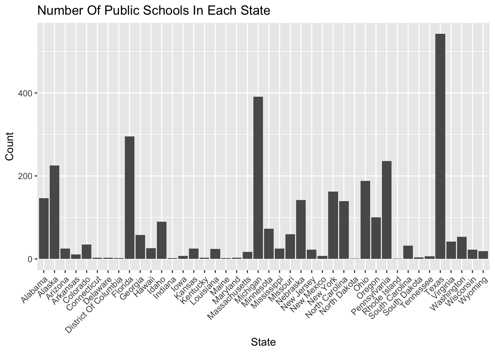
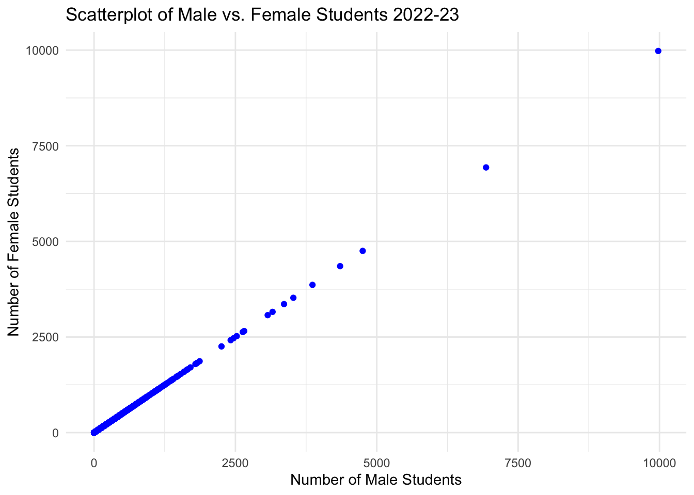

Riya Parikh, Richard Pilleul, Jakob Moskowitz, Maika Takemoto, Ria Sonalker.
Published
October 28, 2024
Modified
October 28, 2024
Data Cleaning
During initial data cleaning, we identified negative values in student number columns, which we removed along with entries marked with symbols (e.g., ‘-’, ‘†’, ‘‡’) for missing or inapplicable data. Moving forward, we plan to restructure the data to address our primary research questions from Blog Post 1, including creating tables sorted by academic year, grade, and gender.
We also found inconsistencies in state name formatting—some, like Texas, were fully capitalized, leading to them being treated as distinct entities. To resolve this, we plotted a bar chart of public schools by state to verify these discrepancies. After confirming this issue, we used the mutate function to standardize state names, capitalizing the first letter (e.g., converting TEXAS to Texas) to unify them.
Additionally, while cleaning for missing values, we observed that rows with excessive N/A values were being removed, which inadvertently led to the loss of many state names and potential bias in our analysis.
In the future, to avoid warnings, we will also ensure that all columns have appropriate data types.
Preliminary Data Analysis
To explore primary insights that our dataset could provide, we plotted a bar chart with the number of schools in each state.
library(ggplot2)library(dplyr)
Attaching package: 'dplyr'
The following objects are masked from 'package:stats':
filter, lag
The following objects are masked from 'package:base':
intersect, setdiff, setequal, union
── Conflicts ────────────────────────────────────────── tidyverse_conflicts() ──
✖ dplyr::filter() masks stats::filter()
✖ dplyr::lag() masks stats::lag()
ℹ Use the conflicted package (<http://conflicted.r-lib.org/>) to force all conflicts to become errors
our_data_clean <- our_data_clean |>filter_all(all_vars(as.numeric(.) >=0|is.na(as.numeric(.)))) |>mutate(`State Name [Public School] Latest available year`=str_to_title(`State Name [Public School] Latest available year`)) |>mutate(across(-c(`School Name`, `State Name [Public School] Latest available year`), as.numeric))
Warning: There were 4 warnings in `filter()`.
The first warning was:
ℹ In argument: `&...`.
Caused by warning in `` as.numeric(`School Name`) >= 0 | is.na(as.numeric(`School Name`)) ``:
! NAs introduced by coercion
ℹ Run `dplyr::last_dplyr_warnings()` to see the 3 remaining warnings.
our_data_clean |>ggplot(aes(x =`State Name [Public School] Latest available year`)) +geom_bar() +theme(axis.text.x =element_text(angle =45, hjust =1)) +labs(title ="Number Of Public Schools In Each State", x ="State", y ="Count")

From the chart, we see states like Texas having the highest number of public schools. This is followed by Michigan, Florida and Alaska. On the other hand, states like Rhode Island, North Dakota and Indiana, have the lowest number of public schools.
Outlier Analysis
We selected five states to analyze potential outliers in school student numbers.
# Selecting states to plotsunique_states =unique(our_data_clean$`State Name [Public School] Latest available year`)selected_states <- our_data_clean[our_data_clean$`State Name [Public School] Latest available year`%in% unique_states[1:11], ]# Outlier Analysis ggplot(selected_states, aes(x =`State Name [Public School] Latest available year`, y =`Grades 1-8 Students [Public School] 2022-23`)) +geom_boxplot(fill ="lightblue") +labs(title ="Boxplot of Total Grade 1-8 Students by State in 2022-23",x ="States",y ="Count of Students") +theme(axis.text.x =element_text(angle =45, hjust =1)) # Rotate x-axis labels to vertical
The graph indicates that Pennsylvania has significant outliers, with one school reporting over 10,000 Grade 1-8 students. We also see the spread of outliers being the greatest for Pennsylvania schools. Moreover, one can observe that the interquartile range for states differ. For example, Colorado has the biggest interquartile range, showing that the middle half of the data, for the number of students in Colorado schools, is spread out. On the other hand, Minnesota has a seemingly lower IQR.
Investigating potential relations between Variables
We wanted to investigate if we found any correlation between our variables. For our preliminary check, we investigated a potential relationship between number of male and female students enrolled in public schools from 2022-23.
ggplot(our_data_clean, aes(x =`Male Students [Public School] 2022-23`, y =`Male Students [Public School] 2022-23`)) +geom_point(color ="blue") +labs(title ="Scatterplot of Male vs. Female Students 2022-23",x ="Number of Male Students",y ="Number of Female Students") +theme_minimal()

As we see from the graph below, there exists a strong linear correlation between the Male and Female students, possibly suggesting evidence of multicollinearity exisiting between the two.